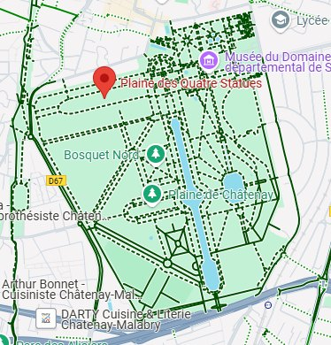
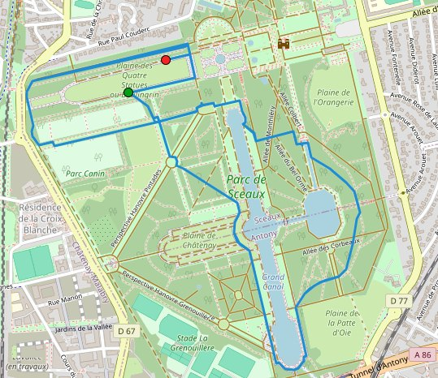
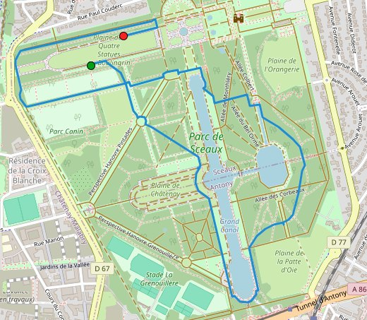
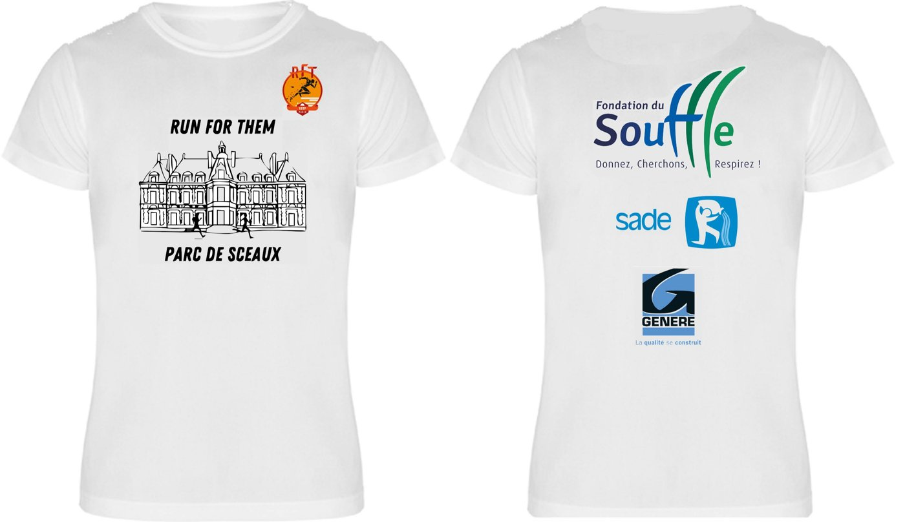
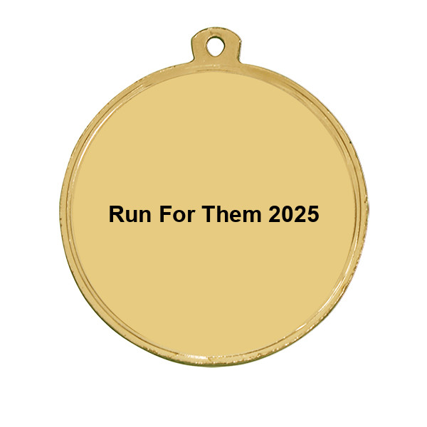
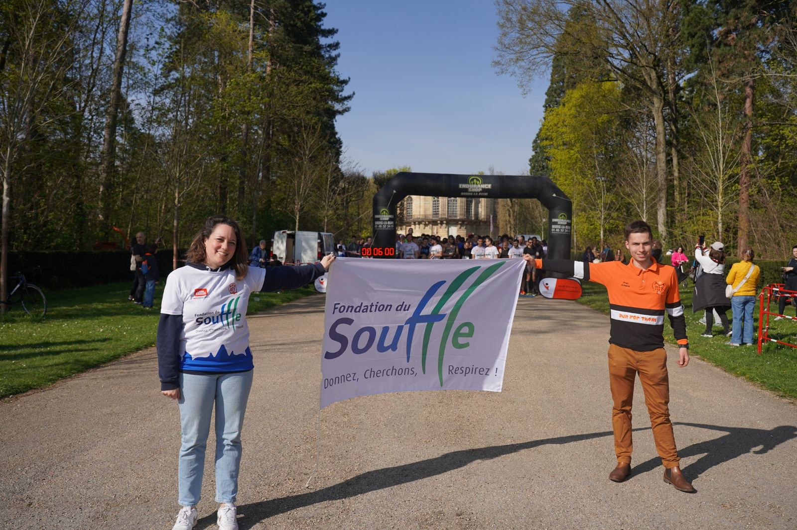
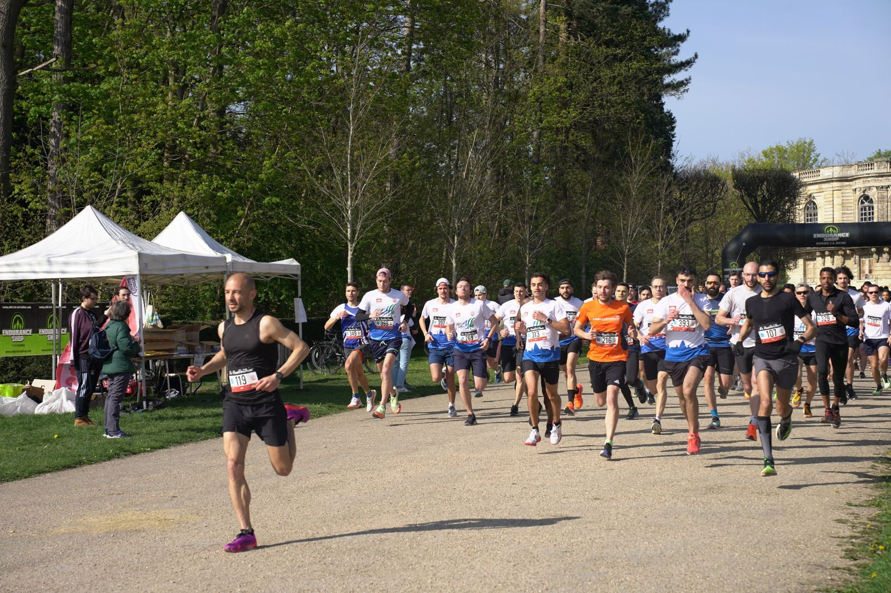
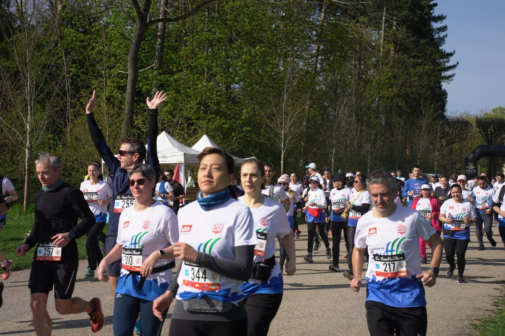
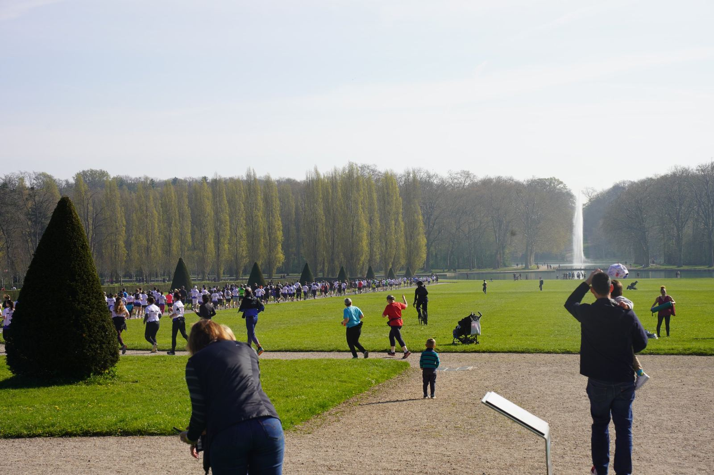

La Run For Them 2025
Dimanche 2 mars 2025 · Parc de Sceaux
Course dans le mythique Parc de Sceaux le 2 mars 2025. Les distances proposées étaient :
- 5 km course
- 10 km course
- 5 km marche
Tous les bénéfices ont été reversés à la Fondation du Souffle.
Informations pratiques

Horaire des départs
Le départ des courses s’est fait à 10 h 00.
Retrait des dossards
- Samedi 1er mars de 10 h à 19 h à l’Endurance Shop de Bourg-la-Reine, 89 avenue du Général-Leclerc.
- Dimanche 2 mars de 8 h 30 à 9 h 45, au niveau de la plaine des Quatre Statues (village de départ), en contrebas du château.
Attention : une pièce d’identité est nécessaire pour le retrait du dossard.
Consigne
Les coureurs pouvaient déposer au niveau de la zone de départ un sac avec leurs affaires personnelles (identifié avec une étiquette fournie par l’organisation). Les sacs étaient à récupérer à l’arrivée.
Les parcours
10 km (2 boucles)

5 km

Le maillot

Devant et dos du maillot
La médaille

En images



